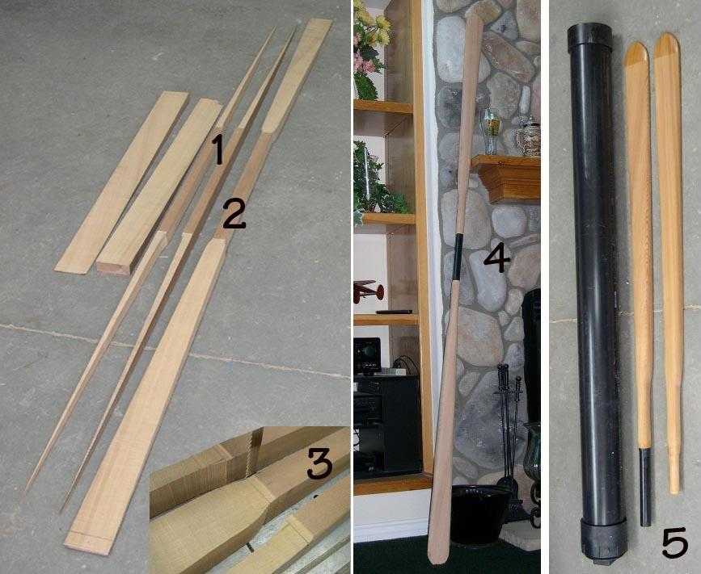

| Take-Apart Paddle Construction | Menu Previous Page Next Page |
|
 This "Modified" Aleut paddle (AP) is constructed using the same non-traditional bandsaw/palm sander method as the Greenland paddle. Use the (BACK) key to return. Unlike the GP, the blades are tapered on one side only, resulting in easier construction. Drawings and specifications for this paddle can be seen in the "Greenland Paddle Constuction" section. A block plane or other shaping tools can also be used . This particular paddle was constructed as a two piece take-apart for transport along with a folding kayak. The take-apart feature also allows compact storage on the deck of any kayak. The 8" (20cm) take-apart ferrule is made from fiberglass paddle shaft. The numbered collage above illustrates the basic elements of this simplified paddle construction method. 1. The remnants of the cedar 2 X 4 after the bandsaw has done it's job. 2. The completed paddle blank. 3. A bandsaw is used to cut out the paddle blank. 4. The "Modified AP" paddle with it's 8" (20cm) take-apart ferrule. An oil finish is yet to be applied. 5. The completed paddle and ABS travel case. The tips and ferrule inserts are coated with epoxy resin for greater durability. The paddle is finished in Watco Danish Oil. In the following pages, construction of the modified AP take-apart paddle, and it's ABS travel case will be discussed. Only those construction details that differ from the GP built earlier, will be detailed. |
|